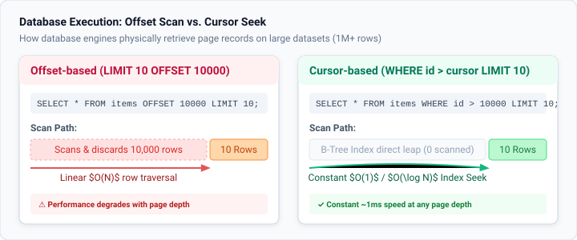
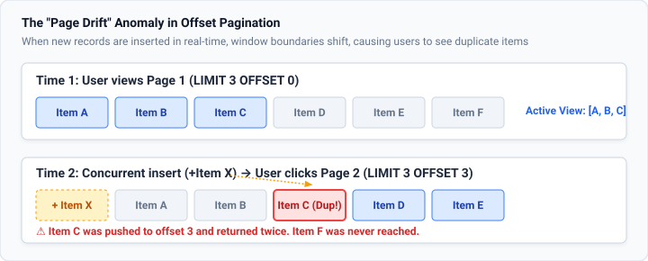

Post
Pagination
Architectures, UI patterns, and the hidden database traps of partitioning data
Pagination is the foundational technique of splitting continuous datasets into discrete, manageable subsets. In early web design, pagination was primarily treated as a user-interface convenience—exemplified by Google's multi-"o" logo at the bottom of search results. Today, as datasets scale into millions of records and client applications run on resource-constrained mobile hardware, pagination represents a critical architectural boundary spanning database query engines, API contracts, and frontend rendering loops.
The Engineering Constraints: Why We Paginate
When an application attempts to retrieve and display unpaginated data, it stresses three distinct system layers:
- Database I/O & Memory Pressure: Fetching a million rows forces database engines to
allocate large working buffers, hold locks, and serialize massive result sets over internal sockets.
- Network Serialization & Payload Latency: Transferring multi-megabyte JSON responses
congests cellular bandwidth, inflates Time to First Byte (TTFB), and increases JSON parse times on the main
thread.
- Browser DOM Node Bloat: Injecting thousands of DOM elements degrades browser layout engines. Memory consumption skyrockets, scrolling stutters below 60fps, and reflow calculations compound exponentially with every user interaction.
The Three UI Pagination Archetypes
Modern user interfaces broadly implement three distinct pagination paradigms, each tailored to specific user intents and browsing behaviors:
1. Numbered Pages
The traditional numbered interface offering direct access to initial, surrounding, and boundary pages via structured link bars.
- Strengths: Deterministic bookmarking, shareable URLs (
?page=4), explicit jump capabilities. - Weaknesses: High click friction for exploratory browsing; awkward on mobile touchscreens.
- Best for: E-commerce product catalogs, search results, administrative data grids.
2. Infinite Scroll
Continuously fetches and appends subsequent records as the user approaches the bottom of the viewport using
IntersectionObserver.
- Strengths: Zero-friction consumption, frictionless storytelling, high mobile engagement.
- Weaknesses: "Trapped footer" dilemma, lost scroll positions upon browser navigation, memory accumulation.
- Best for: Social media feeds (Instagram, TikTok, Reddit), media galleries, casual discovery.
3. Load More
Appends sequential batches only when the user explicitly triggers an actionable "Load More" button.
- Strengths: Reader pacing control, accessible footer navigation, reduced accidental network requests.
- Weaknesses: Still accumulates DOM nodes unless virtualized; requires explicit user action.
- Best for: Mobile shopping, article archive listings, comment threads.
Pattern Comparison Matrix
| Pattern | User Intent | URL State / Shareability | DOM / Memory Impact | Accessibility (A11y) |
|---|---|---|---|---|
| Numbered Pagination | Targeted search, specific item lookup | High (Clean query params: ?page=3) |
Low (Constant node count per page) | High (Explicit landmark links) |
| Infinite Scroll | Casual browsing, unstructured discovery | Low (Requires complex History API push) | High (Requires DOM virtualization) | Low (Trapped footer, focus loss) |
| Load More Button | Controlled incremental consumption | Medium (Can sync with history state) | Medium (Gradual node growth) | High (Keyboard focus on trigger) |
Backend & Database Architectures
Beneath the frontend interface, how data is queried in the database defines performance scalability. The two primary strategies represent a fundamental architectural trade-off between arbitrary access flexibility and raw query execution speed.
1. Offset-Based Pagination (LIMIT & OFFSET)
Offset-based pagination is the ubiquitous default across most web frameworks (such as Ruby on Rails, Django,
and Laravel). Clients pass a page index and page size, which translates to an SQL OFFSET clause:
-- Requesting Page 500 (20 items per page)
SELECT id, title, created_at
FROM products
ORDER BY created_at DESC
LIMIT 20 OFFSET 10000;The $O(N)$ Performance Cliff: While intuitive, offset pagination forces relational databases (like PostgreSQL, MySQL, and SQLite) to read all 10,020 index entries or rows from disk, sort them in memory, discard the initial 10,000 rows, and return only the final 20. As offset depth increases, latency grows linearly, turning sub-millisecond queries into multi-second table-scanning bottlenecks.

The "Page Drift" (Ghost Records) Anomaly: In high-frequency write environments, offset pagination suffers from dataset shifting. If a new record is inserted at time $T_1$ while a user navigates from Page 1 to Page 2, the entire dataset shifts right by one position. The item that previously occupied index 3 on Page 1 is now pushed to index 4 on Page 2, causing the user to see duplicate records. Conversely, row deletions cause items to be silently skipped.

2. Cursor-Based / Keyset Pagination (WHERE id < cursor)
Cursor pagination (keyset pagination) eliminates offsets by utilizing an indexed unique column (such as a sequential ID, UUIDv7, or timestamp) as an execution bookmark:
-- Requesting next page after item #10000
SELECT id, title, created_at
FROM products
WHERE id < 10000
ORDER BY id DESC
LIMIT 20;Because the query filters directly on an indexed column, the database engine executes a direct $O(\log N)$ or
$O(1)$ B-Tree index lookup. Whether querying Page 1 or Page 1,000,000, execution time remains consistently
instantaneous (~1ms). Furthermore, newly inserted records do not alter the cursor condition
(id < cursor), making cursor pagination fully immune to Page Drift.
Interactive Simulator: Offset vs. Cursor in Action
Experiment with the interactive simulator below to observe how different pagination modes operate under live data conditions. Click "⚡ Insert Live Record" to simulate concurrent real-time database writes and watch how Offset pagination triggers Page Drift while Cursor pagination maintains data integrity.
Frontend Implementation & Accessibility Checklist
Building accessible, SEO-compliant pagination requires adherence to semantic web standards:
- Semantic HTML Landmarks: Always wrap pagination controls inside a
<nav aria-label="Pagination">element to provide clear landmark navigation for screen readers. - Active Page Announcement: Designate the current page link with
aria-current="page"so assistive tech announces the active page state without relying on visual styling alone. - Boundary States: When a user reaches the first or last page, disable boundary buttons using
aria-disabled="true"(or nativedisabledon<button>) rather than completely removing the element from the DOM, preserving spatial consistency. - Canonical URLs & Indexation: For search engine bots, ensure each numbered page has a
unique canonical URL (
https://example.com/blog.html?page=2). Avoid canonicalizing all paginated child pages back to page 1, which prevents search engine crawlers from discovering older archive articles.